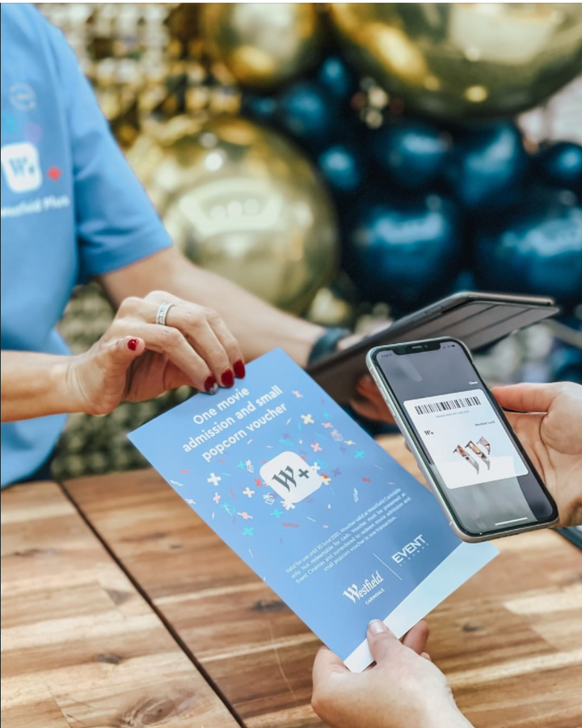

Westfield Campaign
By: Echo
Westfield launched an event in April, when people spend above a certain amount of money in the mall, they can get a gift through the Westfield plus App. This is obviously a promotion of the Westfield plus App to attract more users to download the app and become Westfield members, but the strategy of this event has met the needs of multiple stakeholder groups. Strategic communication should consider the needs, expectations and interests of stakeholders, publics, and society (Macnamara & Gregory 2018, p.482). It is a successful strategic communication example.
First of all, it meets the needs of society and government. COVID-19 has had a great impact on society and the economy. In order to recover the economy, support the businesses such as dining, art and recreation, both the government and society need people to get out and consume more. Take the NSW government as an example, they provide Dine & Discover NSW Vouchers to encourage consumers to spend. Westfield's activities can attract more consumer consumption, which is in line with the needs of society and the government. Secondly, this activity can benefit store operators in the mall. Prior to this, Westfield had also done other activities such as customers could go to Westfield to find a staff to scan the member code every day, and they would get a chance to win $10,000. However, this activity did not let the operators in the mall feel engaged. This activity can attract consumers to spend in the mall, which means that the stores in the mall can get more transactions and get more revenue. In order to obtain more revenue, these store operators could be more engaged in the campaign and more willing to tell others about this campaign. Third, consumers will benefit from this event. For the same consumption amount, consumers will get extra gifts compared to shopping in other places. Although you have to download and register the app, I believe that most consumers will be very happy to receive extra gifts. And to encourage consumers, Westfield will change different gifts every week. For example, I got movie tickets in the first week and body milk in the second week. This strategy could also increase the willingness of consumers to participate in this activity.
However, we have learned that strategic communication should be long-term focused. The purpose of this activity is to allow more people to download Westfield plus App and register for the Westfield member card. Although many users can be obtained through this event, once the event ends, users lose their reason to use this app. Currently, Westfield plus App only has information on parking and stores. These contents are obviously not enough to allow users to use this app. Therefore, from a long-term perspective, Westfield needs to have a plan for how to do the online operation of this app, so that the users brought by this event can be transformed into real marketing data that can be used.